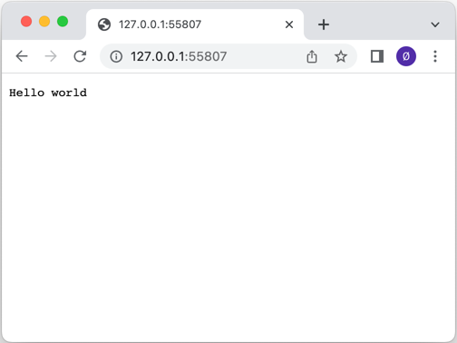

Simple HTTP Server
Simple example of how to set up an HTTP server.

This example shows how to set up a server using the QHttpServer class. The server is bound to an incoming port using the listen() function, and the route() function is used to add a handler for each of several different incoming URLs. For one of the URLs, "/auth", Basic HTTP Authentication is used.
const auto sslCertificateChain = QSslCertificate::fromPath(QStringLiteral(":/assets/certificate.crt")); if (sslCertificateChain.empty()) { qWarning() << QCoreApplication::translate("QHttpServerExample", "Couldn't retrieve SSL certificate from file."); return -1; } QFile privateKeyFile(QStringLiteral(":/assets/private.key")); if (!privateKeyFile.open(QIODevice::ReadOnly)) { qWarning() << QCoreApplication::translate("QHttpServerExample", "Couldn't open file for reading: %1") .arg(privateKeyFile.errorString()); return -1; } httpServer.sslSetup(sslCertificateChain.front(), QSslKey(&privateKeyFile, QSsl::Rsa)); privateKeyFile.close(); const auto sslPort = httpServer.listen(QHostAddress::Any); if (!sslPort) { qWarning() << QCoreApplication::translate("QHttpServerExample", "Server failed to listen on a port."); return -1; }
In the above example QSslConfiguration is used to show how to create an SSL configuration for a QHttpServer to serve HTTPS traffic.
httpServer.afterRequest([](QHttpServerResponse &&resp) { resp.setHeader("Server", "Qt HTTP Server"); return std::move(resp); });
The above example shows how to use the afterRequest() function of the QHttpServer to change the QHttpServerResponse object after it has been handled by the route() function. It demonstrates how HTTP headers can be added to the response.
Files:
Images:
{kind=link}